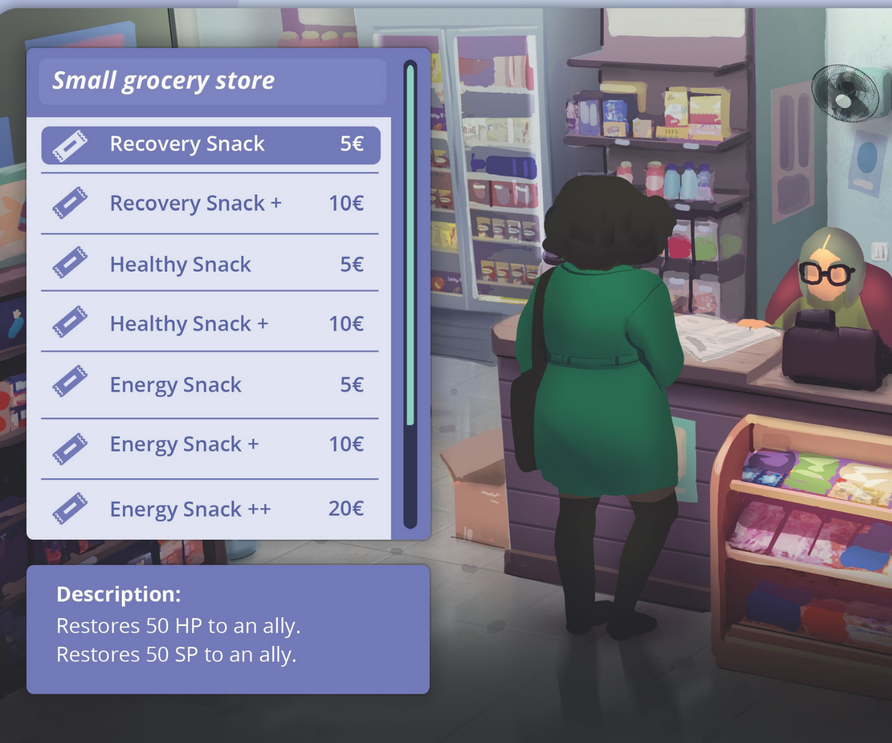
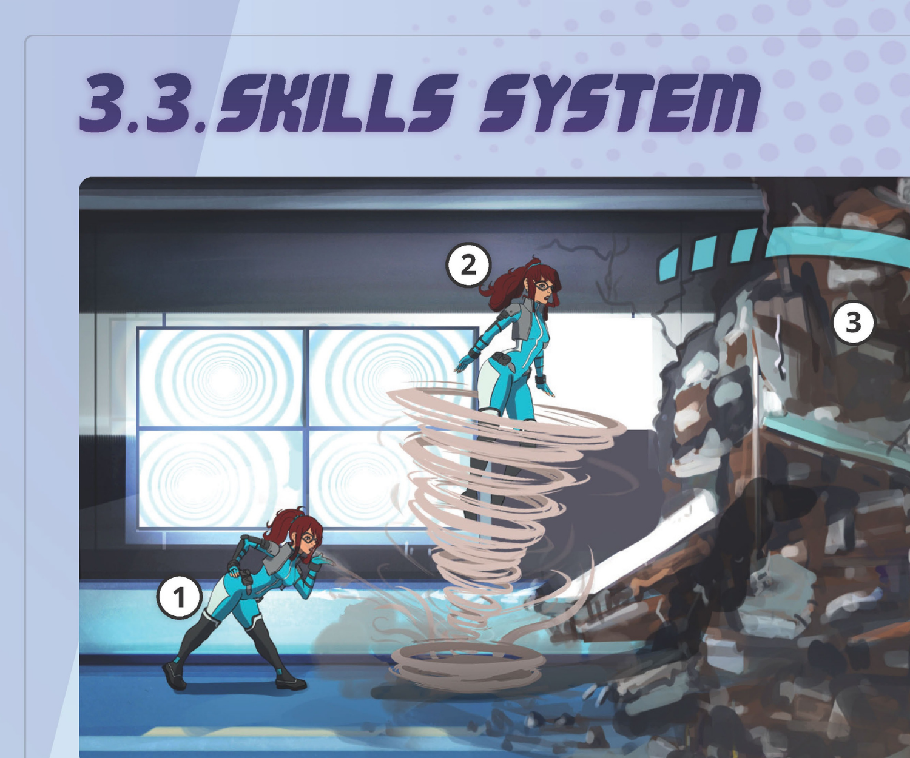
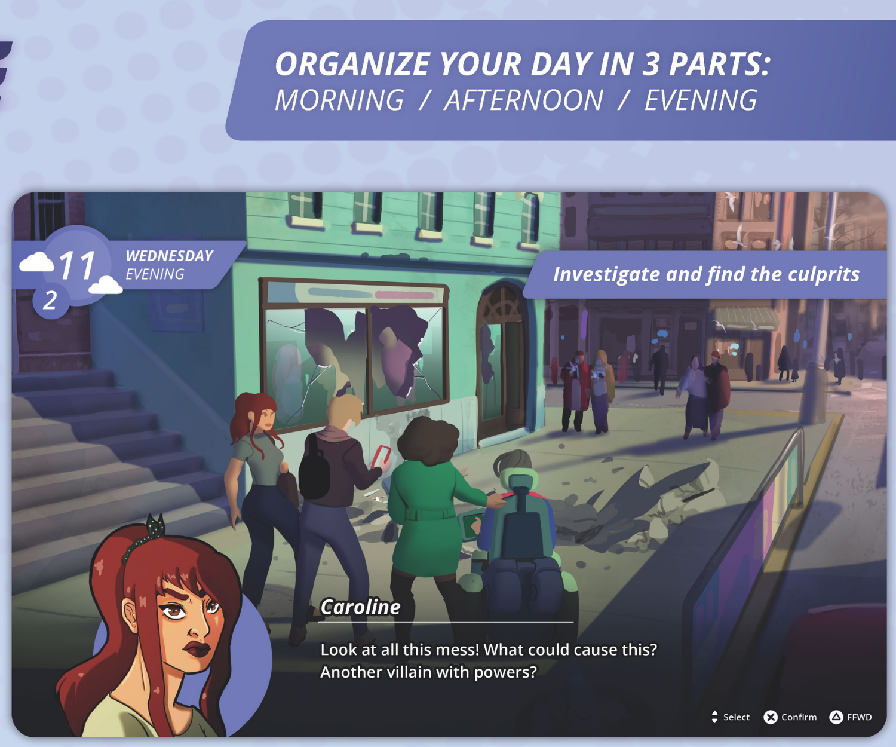

De dónde parte todo el diseño.
Divine Angels es un RPG sobre 4 mujeres — una pediatra, una programadora, una abogada, una ingeniera — que compaginan su vida cotidiana con proteger la ciudad. La premisa prometía algo distinto. El primer prototipo de combate no lo cumplía.
El combate era correcto mecánicamente. Pero cuando un jugador encarna a una pediatra que prefiere negociar antes que pelear, obligarle a resolver todo a golpes rompe la fantasía que el juego le está prometiendo. Eso no es un problema de balance — es un problema de coherencia entre lo que el juego dice que eres y lo que te deja hacer.
Esta pregunta reencuadró todo el proyecto. Ya no buscaba mejorar el combate — buscaba un sistema que mantuviera la promesa del juego dentro del combate, no solo fuera de él.
Tres intentos. Solo el tercero respondía a la pregunta correcta.
Las dos primeras iteraciones mejoraron el combate. Ninguna resolvió la disonancia entre la fantasía del juego y lo que el jugador podía hacer dentro de él.

El sistema funcionaba mecánicamente. El problema era que le decía al jugador "eres una heroína compasiva" y luego le daba solo opciones violentas para resolver los encuentros. La mecánica contradecía la promesa.

Las interacciones ambientales — elementos, trampas, terreno — generaban decisiones tácticas genuinas. Pero seguían siendo decisiones sobre cómo hacer daño, no sobre cómo resolver el conflicto de la forma en que el personaje lo haría.

Convertí el diálogo en una herramienta de combate tan válida como atacar. Calmar, enfurecer, o lograr la rendición sin violencia — siempre posible, con consecuencias tácticas distintas. La violencia pasó a ser una opción más, no la única.


Cuando diseñas partiendo de la fantasía del jugador y vas hacia atrás, los sistemas y la narrativa se alinean solos. No tienes que forzar la coherencia — emerge de la misma pregunta que guía las decisiones de diseño.
Cuatro personajes. Cuatro fantasías distintas que el sistema tiene que sostener.
Cada personaje no es solo un set de habilidades — es una promesa al jugador sobre qué experiencia va a vivir. El reto fue diseñar un sistema único que sostuviera las cuatro sin que ninguna se sintiera forzada.
Un personaje no es un conjunto de stats — es una promesa de experiencia al jugador. Cuando tienes clara la fantasía, las decisiones de habilidades, diálogo y progresión dejan de ser arbitrarias. Tienes un criterio: ¿esto refuerza o contradice la promesa?
Los árboles de habilidades aplican el mismo filtro — ningún poder puede contradecir la promesa del personaje. Y en narrativa, el reto fue la disonancia: que ninguna conversación contradijera lo que el jugador acababa de hacer. Solución: nodos de estado en lugar de ramificación infinita.
Qué cambió en cómo diseño.
Antes de Divine Angels diseñaba sistemas y luego buscaba cómo hacer que la narrativa los acompañara. Este proyecto me obligó a invertir el proceso: primero la experiencia que quiero que tenga el jugador, luego qué sistema la sostiene. La diferencia no es cosmética — cambia qué preguntas haces en cada decisión de diseño.